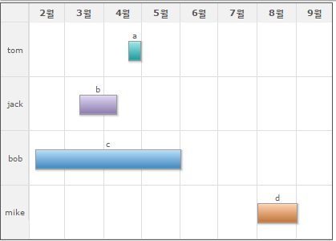

23.FwGanttChart
FwGanttChart는 FusionWidget Wrapper 컴포넌트입니다. FusionWidgets의 데이터는 실제 차트에 보여줄 값과 스타일 옵션들이 하나로 결합되어 있는 형태입니다. WebSquare5에서는 이를 분리하여 차트를 쉽게 Customizing 할 수 있도록 API를 지원합니다.
23.1Property
Property | Description |
|---|---|
autoCategory | fwGanttChart에 category를 자동생성하는 옵션 |
categoryDepth | fwGanttChart에 category를 auto로 생성시 category depth를 설정 |
plotColor | fwGanttChart에 task들의 색상을 지정함 |
23.2브라우저 캡쳐화면

[그림 23-1]01
23.3주의사항 및 Tip
fwGanttChart 의 디자인은 css 로 변경하는것이 아니라 차트가 제공하는 옵션에서 정의합니다. 변경방법은 기술지원에서 문의바랍니다.
DataCollection 만들고 디자인뷰에서 해당컴포넌트를 더블클릭하여 ref, labelNode, valueNode 등 연결해야 됩니다.